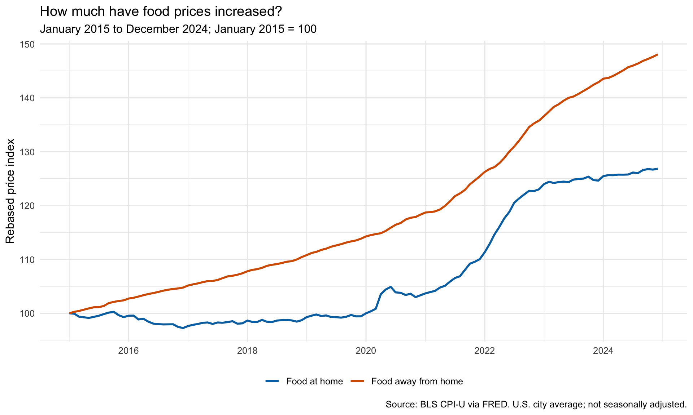
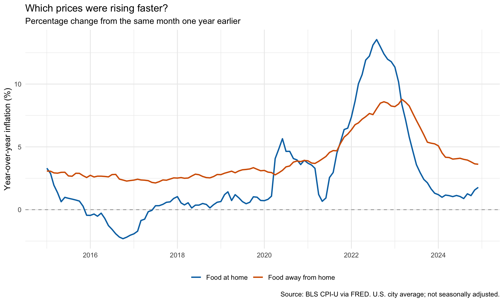
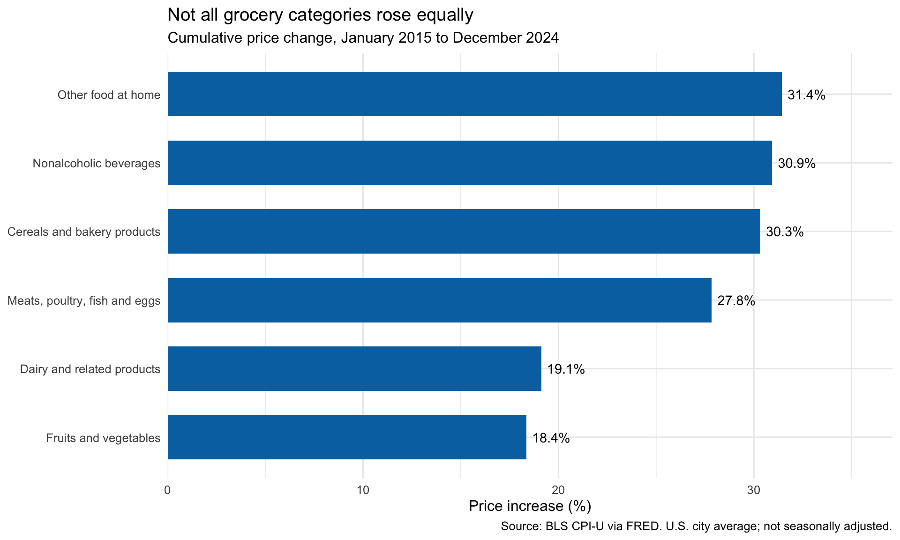

Eating Out vs. Eating In: Which Prices Rose Faster?
economics
food-prices
data-visualization
A decade of U.S. food prices shows why the answer depends on whether we compare cumulative increases or inflation at a particular moment.
Author
Rui Bao
Published
October 4, 2026
Cooking at home is often suggested as a way to stretch a food budget. But grocery prices rise too. Between January 2015 and December 2024, did food away from home become more expensive faster than food bought for home consumption? This distinction matters: the category with the sharpest inflation spike need not have the largest increase over a decade.
Data and approach
I use eight monthly BLS Consumer Price Index for All Urban Consumers (CPI-U) series, downloaded programmatically through FRED: food at home, food away from home, and six grocery categories. They describe the U.S. city average and are not seasonally adjusted. This fixed historical window includes years before and after the pandemic; it is not an analysis of the latest prices.
For cumulative changes, I rebase each index to January 2015 = 100. For inflation, I calculate the percentage change from the same month one year earlier, downloading 2014 observations to calculate the first year’s rates. Comparing the same month across years reduces the influence of recurring seasonality. The code checks for missing months, duplicates, and invalid values before analysis.
Show analysis code
library(readr)library(dplyr)library(ggplot2)for (folder inc("data/raw", "figures", "results")) {dir.create(folder, recursive =TRUE, showWarnings =FALSE)}series <- tibble::tribble(~id, ~category,"CUUR0000SAF11", "Food at home","CUUR0000SEFV", "Food away from home","CUUR0000SAF111", "Cereals and bakery products","CUUR0000SAF112", "Meats, poultry, fish and eggs","CUUR0000SEFJ", "Dairy and related products","CUUR0000SAF113", "Fruits and vegetables","CUUR0000SAF114", "Nonalcoholic beverages","CUUR0000SAF115", "Other food at home")# Download once; reuse the saved snapshot on later renders.get_series <-function(id, category) { file <-file.path("data/raw", paste0(id, ".csv")) url <-paste0("https://fred.stlouisfed.org/graph/fredgraph.csv?id=", id, "&cosd=2014-01-01&coed=2024-12-01")if (!file.exists(file)) { temp <-tempfile(fileext =".csv")download.file(url, temp, mode ="wb", quiet =TRUE) raw <-read_csv(temp, na =c("", "."), show_col_types =FALSE)if (!id %in%names(raw)) stop("Unexpected download for ", id)file.copy(temp, file, overwrite =FALSE)writeLines(c(paste("URL:", url), paste("Retrieved:", Sys.time())),paste0(file, ".source.txt"))unlink(temp) } raw <-read_csv(file, na =c("", "."), show_col_types =FALSE)tibble(date =as.Date(raw[[1]]), cpi =as.numeric(raw[[id]]),category = category, id = id)}cpi <-bind_rows(lapply(seq_len(nrow(series)), function(i) {get_series(series$id[i], series$category[i])})) |>filter(date >=as.Date("2014-01-01"), date <=as.Date("2024-12-01")) |>arrange(category, date)# Include 2014 to calculate year-over-year inflation for 2015.expected_dates <-seq(as.Date("2014-01-01"), as.Date("2024-12-01"), by ="month")for (s in series$id) { x <-filter(cpi, id == s)if (nrow(x) !=length(expected_dates) ||!identical(sort(x$date), expected_dates) ||anyNA(x$cpi) ||any(x$cpi <=0)) {stop("Missing, duplicate, or invalid monthly data: ", s) }}cpi <- cpi |>group_by(category) |>arrange(date, .by_group =TRUE) |>mutate(yoy =100* (cpi /lag(cpi, 12) -1)) |>filter(date >=as.Date("2015-01-01")) |>mutate(index =100* cpi /first(cpi)) |>ungroup()main <- cpi |>filter(category %in%c("Food at home", "Food away from home"))changes <- cpi |>group_by(category, id) |>summarise(start_cpi =first(cpi), end_cpi =last(cpi),change_pct =100* (end_cpi / start_cpi -1), .groups ="drop")write_csv(cpi, "results/monthly_analysis.csv")write_csv(changes, "results/cumulative_changes.csv")series <- series |>mutate(source ="U.S. Bureau of Labor Statistics",frequency ="Monthly", adjustment ="Not seasonally adjusted",source_url =paste0("https://fred.stlouisfed.org/series/", id))write_csv(series, "results/series_dictionary.csv")writeLines(capture.output(sessionInfo()), "results/sessionInfo.txt")colors <-c("Food at home"="#0072B2", "Food away from home"="#D55E00")theme_set(theme_minimal(base_size =12))source_note <-"Source: BLS CPI-U via FRED. U.S. city average; not seasonally adjusted."p1 <-ggplot(main, aes(date, index, color = category)) +geom_line(linewidth =1) +scale_color_manual(values = colors) +scale_x_date(date_breaks ="2 years", date_labels ="%Y") +labs(title ="How much have food prices increased?",subtitle ="January 2015 to December 2024; January 2015 = 100",x =NULL, y ="Rebased price index", color =NULL, caption = source_note) +theme(legend.position ="bottom")p2 <-ggplot(main, aes(date, yoy, color = category)) +geom_hline(yintercept =0, color ="grey65", linetype ="dashed") +geom_line(linewidth =0.9) +scale_color_manual(values = colors) +scale_x_date(date_breaks ="2 years", date_labels ="%Y") +labs(title ="Which prices were rising faster?",subtitle ="Percentage change from the same month one year earlier",x =NULL, y ="Year-over-year inflation (%)", color =NULL, caption = source_note) +theme(legend.position ="bottom")categories <- changes |>filter(!category %in%c("Food at home", "Food away from home"))p3 <-ggplot(categories, aes(change_pct, reorder(category, change_pct))) +geom_col(fill ="#0072B2", width =0.65) +geom_text(aes(label =sprintf("%.1f%%", change_pct)), hjust =-0.15, size =3.8) +scale_x_continuous(expand =expansion(mult =c(0, 0.18))) +labs(title ="Not all grocery categories rose equally",subtitle ="Cumulative price change, January 2015 to December 2024",x ="Price increase (%)", y =NULL, caption = source_note)for (i in1:3) {ggsave(paste0("figures/figure", i, ".png"), plot =list(p1, p2, p3)[[i]],width =10, height =6, dpi =180)}# These values also populate the prose, so text and figures stay consistent.pct <-function(x) sprintf("%.1f", x)change_for <-function(name) changes$change_pct[changes$category == name]peak_home <- main |>filter(category =="Food at home") |>slice_max(yoy, n =1, with_ties =FALSE)peak_away <- main |>filter(category =="Food away from home") |>slice_max(yoy, n =1, with_ties =FALSE)last_home <- main |>filter(category =="Food at home") |>slice_max(date, n =1)last_away <- main |>filter(category =="Food away from home") |>slice_max(date, n =1)
1. Eating out became more expensive faster overall

Figure 1: Both series start at January 2015 = 100. The lines compare price changes, not the dollar cost of equivalent meals.
From January 2015 to December 2024, food-away-from-home prices increased by 48.1%, compared with 26.8% for groceries. That is a difference of 21.2 percentage points in cumulative growth.
The first figure therefore gives a clear answer for this period: eating out experienced the larger percentage increase. This does not mean a restaurant meal costs 21.2% more than a home-cooked meal. The two indexes track different baskets, and rebasing deliberately removes their original levels.
2. The biggest inflation spike happened in groceries

Figure 2: Year-over-year inflation compares each month with the same month one year earlier. A falling positive rate means prices are still increasing.
The second figure adds a different perspective. Grocery inflation reached 13.5% in August 2022, while food-away-from-home inflation peaked at 8.8% in March 2023. Groceries had the sharper peak, even though their cumulative increase was smaller.
By December 2024, annual inflation had slowed to 1.8% for groceries and 3.6% for eating out. Slower inflation did not restore 2015 prices: both rates remained positive. This helps reconcile two observations that can otherwise seem contradictory: food inflation eased, but food still cost substantially more than before.
3. The grocery average hides different experiences

Figure 3: Six major food-at-home categories, January 2015 to December 2024. These are category increases, not weighted contributions to total grocery inflation.
The third figure shows why the grocery average is not every household’s experience. Other food at home rose 31.4%, nonalcoholic beverages 30.9%, and cereals and bakery products 30.3%. Fruits and vegetables increased 18.4%, while dairy rose 19.1%.
A household’s exposure depends on what it buys. However, these bars cannot tell us which category contributed most to overall inflation, because spending weights differ. Nor should we average the six percentages to reconstruct the official grocery index.
Limitations
These national urban averages do not describe a specific Philadelphia store, restaurant, or student budget. They also cannot measure the savings from switching identical meals between home and restaurants, including cooking time. Endpoint choices matter, and the analysis is descriptive: it does not identify why prices changed. Potential explanations would require additional data.
Sources and reproducibility
Data originate with the BLS CPI program and are retrieved through FRED: food at home, food away from home, and the six series identified with source URLs in results/series_dictionary.csv.
The code is included above. The GitHub repository contains the website project; this analysis belongs in blog/posts/post4. Its README explains replication. Original CSVs and retrieval records are preserved in data/raw, charts in figures, and calculated tables and R session information in results. Later renders reuse the saved inputs.
Takeaway
Eating out had the larger cumulative price increase over 2015–2024, but groceries experienced the sharper inflation spike. The timing and the shopping basket both matter. A lower inflation rate means slower price growth, not a return to earlier prices.